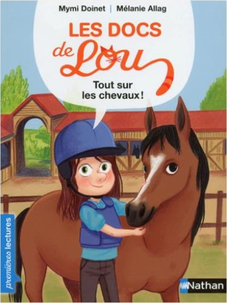
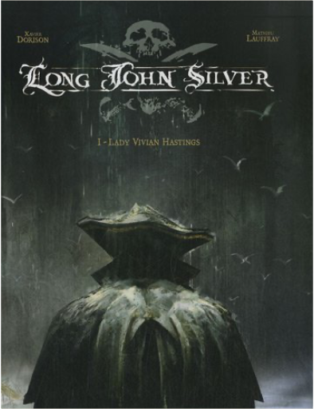

Books
Movies
Albums
Videogames
Games
BD
BD Camille
Blu-ray
Business
Camille
Comics
Cooking
Lego
Manga
Pauline
Photography
Star Wars
T'choupi
Travel
TV Shows
Un livre dont vous êtes le héro
Vinyl
Walt Disney
26
27
28
29
30
walt disney - zootopie, le roman du film
walt disney
winnie l'ourson, mes premières histoires
walt disney
l'histoire de la vie, du big-bang jusqu'à toi
p'tits docs

les docs de lou : tout sur les chevaux
mymi doinet
la tour eiffel a des ailes !
mymi doinet
les animaux de lou - courage, petit marin !
mymi doinet
les animaux de lou - ne pleure plus, petit roux !
mymi doinet
les animaux de lou - tu es chou, petit chat !
mymi doinet
les aventures d'anouk et benji - un cheval si génial
mymi doinet

long john silver, tome 1 : lady vivian hastings
xavier dorison, mathieu lauffray
4
long john silver, tome 2 : neptune
xavier dorison, mathieu lauffray
4.5
long john silver, tome 3 : le labyrinthe d'émeraude
xavier dorison, mathieu lauffray
5
26
27
28
29
30


 Made with Delicious Library Made with Delicious Library
Made with Delicious Library Made with Delicious Library